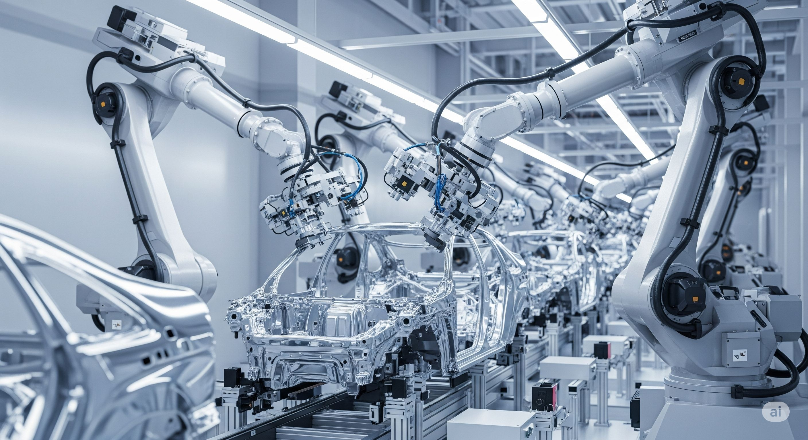

Economia brasileira mostra sinais de recuperação em 2025
Após um período de desafios, a economia brasileira começa a demonstrar sinais consistentes de recuperação em 2025. Dados recentes do Instituto Brasileiro de Geografia e Estatística (IBGE) indicam um crescimento de 0.8% no Produto Interno Bruto (PIB) no primeiro trimestre, superando as expectativas do mercado.
O setor de serviços, que representa a maior parcela da economia, foi o principal motor desse crescimento, com destaque para as áreas de turismo, tecnologia da informação e comércio varejista. A indústria também apresentou um desempenho positivo, impulsionada pela retomada da produção em setores chave como o automobilístico e o de bens de consumo duráveis.
Fatores da Recuperação
Analistas apontam uma combinação de fatores para essa melhora, incluindo a estabilização da inflação, a queda gradual da taxa de juros e o aumento da confiança dos investidores e consumidores. As reformas estruturais implementadas nos últimos anos também começam a surtir efeito, criando um ambiente de negócios mais favorável.
Apesar dos sinais positivos, especialistas alertam para a necessidade de cautela. Desafios como o endividamento público e a volatilidade do cenário internacional ainda persistem. Manter o ritmo de crescimento exigirá a continuidade das políticas de ajuste fiscal e o fomento a investimentos em infraestrutura e inovação.
Perspectivas Futuras
As projeções para o restante do ano são otimistas, com expectativa de um crescimento acumulado do PIB entre 2% e 2.5%. A geração de empregos também tem mostrado uma tendência de alta, embora a recuperação do mercado de trabalho ainda seja gradual. O governo federal reafirmou seu compromisso com a responsabilidade fiscal e a atração de investimentos estrangeiros para consolidar a trajetória de crescimento sustentável.